Notifications - это уведомления, которые пользователь видит в верхней части экрана, когда ему приходит новое письмо, сообщение, обновление и т.п. В ближайшие несколько уроков мы подробно разберем, какие возможности предоставлены разработчикам для показа уведомлений.
В этом уроке рассмотрим основы - отображение/обновление/удаление уведомления и обработка нажатия на него.
Отображение
Код создания простого уведомления выглядит так:
NotificationCompat.Builder builder =
new NotificationCompat.Builder(this)
.setSmallIcon(R.mipmap.ic_launcher)
.setContentTitle("Title")
.setContentText("Notification text");
Notification notification = builder.build();
NotificationManager notificationManager =
(NotificationManager) getSystemService(NOTIFICATION_SERVICE);
notificationManager.notify(1, notification);
Используем билдер, в котором указываем иконку, заголовок и текст для уведомления. Методом build получаем готовое уведомление.
Далее используем NotificationManager и его метод notify, чтобы показать созданное уведомление. Кроме notification, требуется передать id. Это необходимо, чтобы в дальнейшем мы могли использовать этот id для обновления или удаления уведомления.
Конструктор new NotificationCompat.Builder(Context) будет помечен как Deprecated, если вы используете библиотеку appCompat версии 26 и выше. Так получилось потому, что в Android API 26 появился новый конструктор и рекомендуется использовать его. Пока не обращайте внимание на это. В одном из следующих уроков мы рассмотрим использование правильного конструктора.
Запустив этот код, мы увидим уведомление
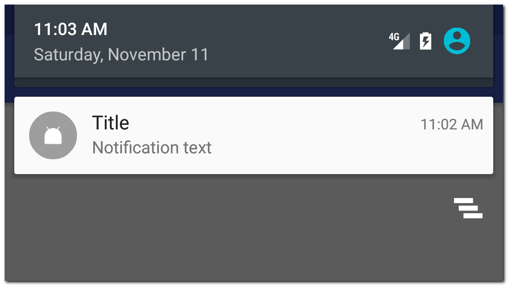
Оно отображает иконку и два текста, которые мы указывали в билдере. Нажатие на него ни к чему не приведет, т.к. мы не реализовали обработчик нажатия. Мы это сделаем чуть позже.
Обновление
Мы отобразили уведомление и теперь хотим его обновить. Для этого нужно просто снова показать уведомление методом notify и использовать при этом тот же id.
Это будет выглядеть так:
NotificationCompat.Builder builder =
new NotificationCompat.Builder(this)
.setSmallIcon(android.R.drawable.ic_dialog_email)
.setContentTitle("Title change")
.setContentText("Notification text change");
Notification notification = builder.build();
NotificationManager notificationManager =
(NotificationManager) getSystemService(NOTIFICATION_SERVICE);
notificationManager.notify(1, notification);
Код полностью аналогичен коду, что мы использовали при отображении уведомления. Только в билдере используем другие тексты и иконку. Самое главное, что в методе notify мы снова используем id = 1. NotificationManager по этому id найдет уведомление, которое мы отобразили чуть раньше и заменит его новым
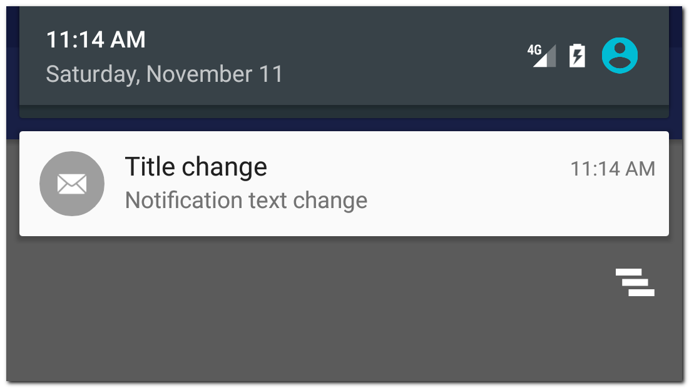
Несколько уведомлений
Чтобы показать новое уведомление, а не обновить уже существующее, надо использовать другой id в методе notify.
Первое уведомление
NotificationCompat.Builder builder =
new NotificationCompat.Builder(this)
.setSmallIcon(R.mipmap.ic_launcher)
.setContentTitle("Title")
.setContentText("Notification text");
Notification notification = builder.build();
NotificationManager notificationManager =
(NotificationManager) getSystemService(NOTIFICATION_SERVICE);
notificationManager.notify(1, notification);
Второе уведомление
NotificationCompat.Builder builder =
new NotificationCompat.Builder(this)
.setSmallIcon(android.R.drawable.ic_dialog_email)
.setContentTitle("Title 2")
.setContentText("Notification text 2");
Notification notification = builder.build();
NotificationManager notificationManager =
(NotificationManager) getSystemService(NOTIFICATION_SERVICE);
notificationManager.notify(2, notification);
Мы использовали разные id в методе notify и получили два разных уведомления
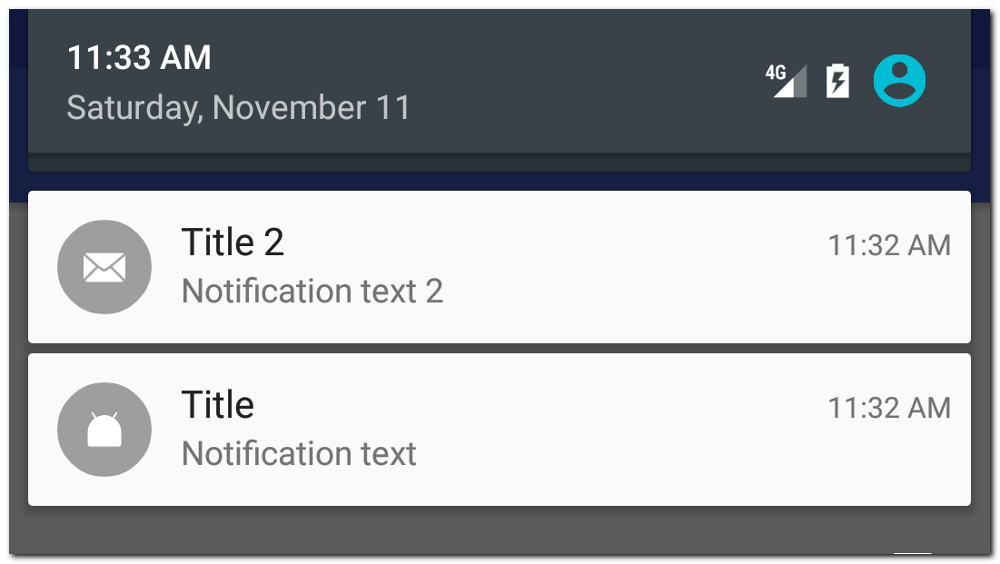
Удаление
Чтобы удалить уведомление, используем NotificationManager и его метод cancel с указанием id уведомления.
NotificationManager notificationManager =
(NotificationManager) getSystemService(NOTIFICATION_SERVICE);
notificationManager.cancel(1);Либо методом cancelAll можем удалить все уведомления сразу
NotificationManager notificationManager =
(NotificationManager) getSystemService(NOTIFICATION_SERVICE);
notificationManager.cancelAll();При удалении уведомления нет необходимости проверять, отображается оно или нет. Если уведомления по каким-то причинам уже нет, то просто ничего не произойдет.
Обработка нажатия
Чтобы выполнить какое-либо действие по нажатию на уведомление, необходимо использовать PendingIntent. PendingIntent - это контейнер для Intent. Этот контейнер может быть использован для последующего запуска вложенного в него Intent.
Мы будем создавать Intent для запуска, например, Activity, упаковывать этот Intent в PendingIntent и передавать PeningIntent в уведомление. По нажатию на уведомление, система достанет из него PedningIntent и использует вложенный в него Intent, чтобы запустить Activity.
Давайте посмотрим, как это выглядит на практике:
Intent resultIntent = new Intent(this, MainActivity.class);
PendingIntent resultPendingIntent = PendingIntent.getActivity(this, 0, resultIntent,
PendingIntent.FLAG_UPDATE_CURRENT);Создаем Intent для запуска Activity и упаковываем его в PedningIntent.
Подробно о PedningIntent и его параметрах вы можете почитать в Уроке 119. Там я подробно рассмотрел различные кейсы на примерах с уведомлением и вызовом BroadcastReceiver.
Созданный PendingIntent нам надо будет передать в билдер уведомления. Полный код создания уведомления будет выглядеть так:
// Create PendingIntent
Intent resultIntent = new Intent(this, MainActivity.class);
PendingIntent resultPendingIntent = PendingIntent.getActivity(this, 0, resultIntent,
PendingIntent.FLAG_UPDATE_CURRENT);
// Create Notification
NotificationCompat.Builder builder =
new NotificationCompat.Builder(this)
.setSmallIcon(R.mipmap.ic_launcher)
.setContentTitle("Title")
.setContentText("Notification text")
.setContentIntent(resultPendingIntent);
Notification notification = builder.build();
// Show Notification
NotificationManager notificationManager =
(NotificationManager) getSystemService(NOTIFICATION_SERVICE);
notificationManager.notify(1, notification);Передаем PendingIntent в метод setContentIntent билдера уведомления.
По нажатию на уведомление откроется MainActivity
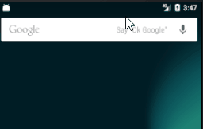
Обратите внимание, что уведомление не удаляется автоматически после нажатия на него. Чтобы исправить это, можно в билдере уведомления использовать включить параметр autoCancel
setAutoCancel(true)Уведомление, созданное с этим флагом будет закрываться после нажатия на него.
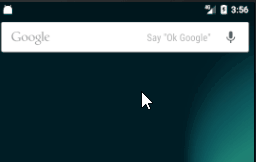
Билдер уведомления имеет еще несколько методов, которые могут быть полезны.
setNumber - позволяет добавить число в уведомление
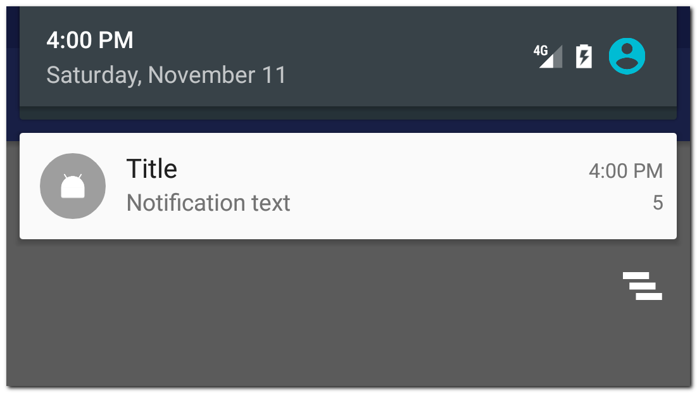
setContentInfo - добавит текст справа
В старых версиях это выглядит так
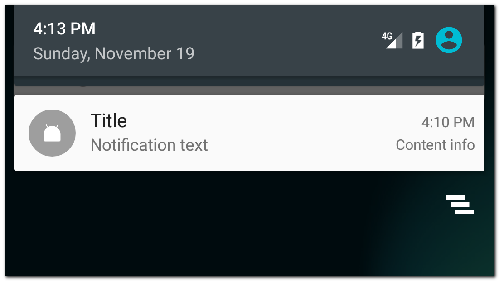
В последних версиях он переехал в верхнюю часть уведомления
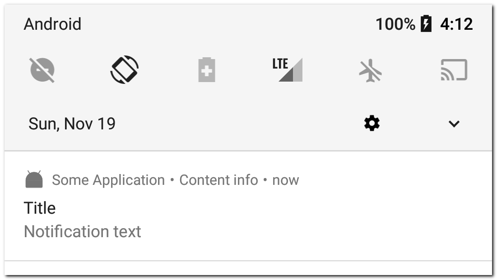
setColor - добавит фоновый цвет к иконке
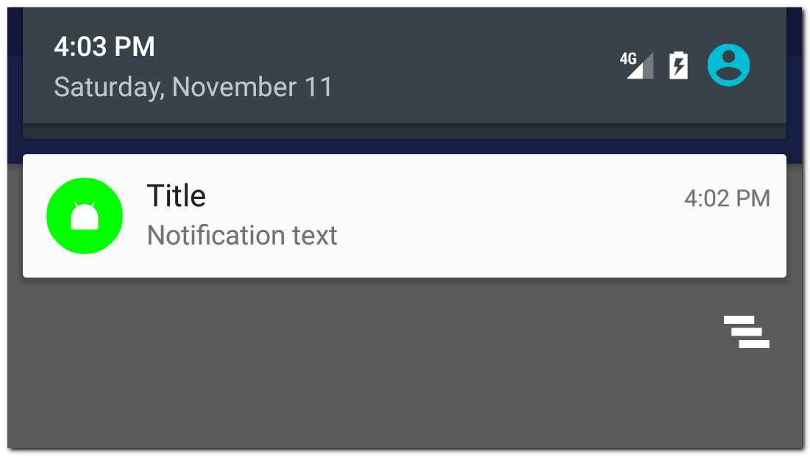
setWhen - можно указать свое время для уведомления (время when). По умолчанию when = времени создания уведомления
setShowWhen - показывать ли время в уведомлении
setUsesChronometer - вместо статичного времени в уведомлении будет отображаться счетчик (00:00), показывающий сколько прошло от времени when. Может быть полезно для уведомления секундомера или звонка.
setOngoing - такое уведомление пользователь не сможет закрыть или смахнуть. Оно будет отображаться поверх обычных уведомлений.
setVibrate, setSound, setLights - настройки вибры, звука и LED индикатора устройства
setPriority - возможность установить приоритет. Доступные значения от -2 (NotificationCompat.PRIORITY_MIN) до 2 (NotificationCompat.PRIORITY_MAX). Поведение может отличаться на разных версиях Android, но общий смысл одинаков - чем выше приоритет, тем выше вероятность того, что пользователь увидит ваше уведомление.
setTimeoutAfter - возможность установить таймаут (в мсек), после которого уведомление само удалится. Добавлен в API 26.
setLargeIcon - возможность задать свою картинку в качестве иконки уведомления.
BitmapFactory.Options options = new BitmapFactory.Options();
Bitmap bitmap = BitmapFactory.decodeResource(getResources(), R.mipmap.startandroid, options);
NotificationCompat.Builder builder =
new NotificationCompat.Builder(this)
.setSmallIcon(R.mipmap.ic_launcher)
.setContentTitle("Title")
.setContentText("Notification text")
.setLargeIcon(bitmap);Иконка из setSmallIcon будет видна в статусбаре, когда панель уведомлений не раскрыта.
А само уведомление будет выглядеть так:
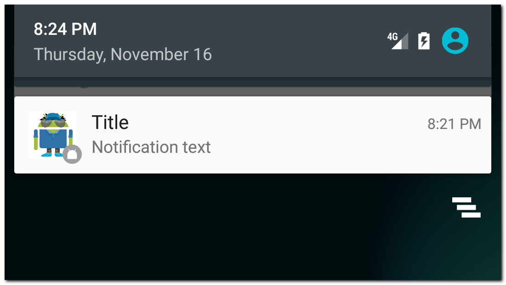
setProgress - возможность отобразить прогрессбар в уведомлении
У метода три параметра:
max - максимальное значение прогрессбара. Укажите 0, если надо скрыть прогрессбар.
progress - текущее значение прогрессбара. Может быть от 0 до max.
indeterminate - если true, то будет показан "бесконечный" прогрессбар
Рассмотрим пример:
int max = 100;
// show notification with indeterminate progressbar
builder = new NotificationCompat.Builder(this)
.setSmallIcon(R.mipmap.ic_launcher)
.setContentTitle("Some operation")
.setContentText("Preparing")
.setProgress(max,0, true);
notificationManager.notify(1, builder.build());
new Thread(new Runnable() {
@Override
public void run() {
try {TimeUnit.SECONDS.sleep(3);
} catch (InterruptedException e) {
e.printStackTrace();
}
int progress = 0;
while (progress < max) {
try {
TimeUnit.MILLISECONDS.sleep(300);
} catch (InterruptedException e) {
e.printStackTrace();
}
progress += 10;
// show notification with current progress
builder.setProgress(max, progress, false)
.setContentText(progress + " of " + max);
notificationManager.notify(1, builder.build());
}
// show notification without progressbar
builder.setProgress(0, 10, false)
.setContentText("Completed");
notificationManager.notify(1, builder.build());
}
}).start();Сначала отображаем бесконечный прогрессбар и текст Preparing. Т.е. делаем вид, что идет подготовка к выполнению операции.
Затем в отдельном потоке имитируем выполнение операции. Каждые 300 мсек увеличиваем значение progress и обновляем уведомление, чтобы прогрессбар показал текущий прогресс. А также в тексте показываем значение прогресса и максимума.
После выполнения операции скрываем прогрессбар и показываем текст Completed.
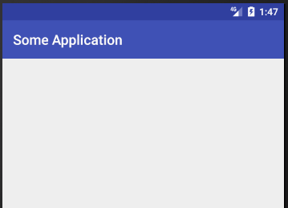
Повторюсь, очень рекомендую прочесть и понять Урок 119. В нем я подробно рассматриваю, почему PendingIntent последнего уведомления заменяет PendingIntent предыдущих уведомлений, и как этого можно избежать, используя, например, requestCode.